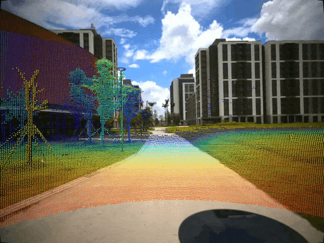
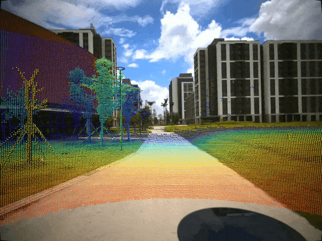

FusionPortable V2-Calibration Tutorial
Overview of Calibration Approaches¶
Sensor |
Calibrated Parameter | Approach | Source | Citation | |
|---|---|---|---|---|---|
| Intrinsics | IMU | Noisy Density, Random Walk | Allen variance analysis | Code | |
| Intrinsics | Wheel Encoder | Wheel Radiu, Axle Track | Minimize alignment error between ground-truth trajectory and estimated trajectory | Code | [1] |
| Intrinsics | Camera | Focal Length, Center Point, Distortion | Minimize reprojection error | MATLAB Toolbox | [2] |
Sensor |
Calibrated Parameter | Approach | Source | Citation | |
|---|---|---|---|---|---|
| Extrinsics | IMU-IMU | Rotation, Translation | Optimization | Code | [3] |
| Extrinsics | IMU-Camera | Rotation, Translation, Constant Time Offset | Optimization | Code | [4] |
| Extrinsics | IMU-Prism | Translation | Hand-eye calibration | Code | [5] |
| Extrinsics | IMU-Legged Sensors | Rotation, Translation | Obtained from the CAD model | ||
| Extrinsics | Camera-Camera | Rotation, Translation | Minimize reprojection errors | MATLAB Toolbox | [2] |
| Extrinsics | Camear-LiDAR | Rotation, Translation | Minimize point-to-line and point-to-plane errors | Code | [6] |
Note: After getting the extrinsics from the IMU-Left Frame Camera (T1) and Left Frame Camera-LiDAR (T2), we can infer extrinsics from IMU-LiDAR (T) by matrix multiplication: T = T1 x T2. We can obtain extrinsics among sensors indirectly by following this steps repeatedly.
References¶
- [1] Jeong J, Cho Y, Shin YS, Roh H and Kim A (2019) Complex urban dataset with multi-level sensors from highly diverse urban environments. The International Journal of Robotics Research 38(6): 642–657.
- [2] Zhang Z (2000) A flexible new technique for camera calibration. IEEE Transactions on pattern analysis and machine intelligence 22(11): 1330–1334.
- [3] Rehder J, Nikolic J, Schneider T, Hinzmann T and Siegwart R (2016) Extending kalibr: Calibrating the extrinsics of multiple imus and of individual axes. In: 2016 IEEE International Conference on Robotics and Automation (ICRA). IEEE, pp. 4304–4311.
- [4] Furgale P, Rehder J and Siegwart R (2013) Unified temporal and spatial calibration for multi-sensor systems. In: 2013 IEEE/RSJ International Conference on Intelligent Robots and Systems. IEEE, pp. 1280–1286.
- [5] Furrer F, Fehr M, Novkovic T, Sommer H, Gilitschenski I and Siegwart R (2018) Evaluation of combined time-offset estimation and hand-eye calibration on robotic datasets. In: Field and Service Robotics. Springer, pp. 145–159.
- [6] Jiao J, Chen F, Wei H, Wu J and Liu M (2023) Lce-calib: automatic lidar-frame/event camera extrinsic calibration with a globally optimal solution. IEEE/ASME Transactions on Mechatronics 28(5): 2988–2999.
Guidelines for Good Calibration¶
All these calibration tools have been publicly released, accompanied by detailed tutorials for data preparation and calibration. Rather than repeating their guidance, we aim to explain some tips for data collection to achieve good calibration results. We believe that these explanations will be beneficial to beginners.
Intrinsic Calibration of Wheel Encoder¶
Extrinsic Calibration of IMU-Prism¶
Extrinsic Calibration of Camera-LiDAR¶
Calibration Verification¶
Projected Point Cloud with Camera-LiDAR Calibration (LCE-Calib)
 
